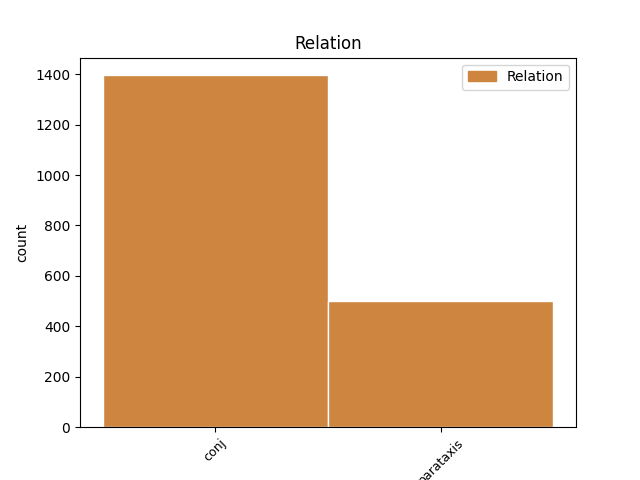
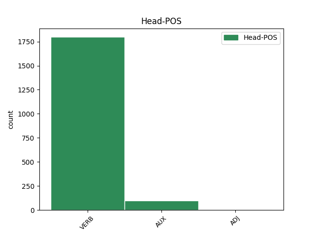
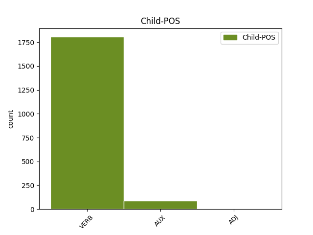

Distribution of features within this leaf



Agreement Rules sorted by frequency.
- When the dependent token is the conjunct(conj) of the head token,
1 Під _ _ _ _ 0 _ _ _
2 час _ _ _ _ 0 _ _ _
3 показу _ _ _ _ 0 _ _ _
4 у _ _ _ _ 0 _ _ _
5 США _ _ _ _ 0 _ _ _
6 , _ _ _ _ 0 _ _ _
7 що _ _ _ _ 0 _ _ _
8 розпочався _ _ _ _ 0 _ _ _
9 18 _ _ _ _ 0 _ _ _
10 вересня _ _ _ _ 0 _ _ _
11 2015 _ _ _ _ 0 _ _ _
12 року _ _ _ _ 0 _ _ _
13 , _ _ _ _ 0 _ _ _
14 протягом _ _ _ _ 0 _ _ _
15 першого _ _ _ _ 0 _ _ _
16 тижня _ _ _ _ 0 _ _ _
17 фільм _ _ _ _ 0 _ _ _
18 був бути AUX Vapis-sm Aspect=Imp|Gender=Masc|Mood=Ind|Number=Sing|Tense=Past|VerbForm=Fin 0 _ _ _
19 показаний _ _ _ _ 0 _ _ _
20 у _ _ _ _ 0 _ _ _
21 545 _ _ _ _ 0 _ _ _
22 кінотеатрах _ _ _ _ 0 _ _ _
23 і _ _ _ _ 0 _ _ _
24 зібрав зібрати VERB Vmeis-sm Aspect=Perf|Gender=Masc|Mood=Ind|Number=Sing|Tense=Past|VerbForm=Fin 18 conj _ Id=39r9|LTranslit=zibraty|Translit=zibrav
25 7 222 035 _ _ _ _ 0 _ _ _
26 $ _ _ _ _ 0 _ _ _
27 , _ _ _ _ 0 _ _ _
28 що _ _ _ _ 0 _ _ _
29 на _ _ _ _ 0 _ _ _
30 той _ _ _ _ 0 _ _ _
31 час _ _ _ _ 0 _ _ _
32 дозволило _ _ _ _ 0 _ _ _
33 йому _ _ _ _ 0 _ _ _
34 зайняти _ _ _ _ 0 _ _ _
35 5 _ _ _ _ 0 _ _ _
36 місце _ _ _ _ 0 _ _ _
37 серед _ _ _ _ 0 _ _ _
38 усіх _ _ _ _ 0 _ _ _
39 прем'єр _ _ _ _ 0 _ _ _
40 . _ _ _ _ 0 _ _ _
1 Показ _ _ _ _ 0 _ _ _
2 в _ _ _ _ 0 _ _ _
3 Україні _ _ _ _ 0 _ _ _
4 тривав _ _ _ _ 0 _ _ _
5 7 _ _ _ _ 0 _ _ _
6 тижнів _ _ _ _ 0 _ _ _
7 і _ _ _ _ 0 _ _ _
8 завершився завершитися VERB Vmeis-sm Aspect=Perf|Gender=Masc|Mood=Ind|Number=Sing|Tense=Past|VerbForm=Fin 0 _ _ _
9 8 _ _ _ _ 0 _ _ _
10 листопада _ _ _ _ 0 _ _ _
11 2015 _ _ _ _ 0 _ _ _
12 року _ _ _ _ 0 _ _ _
13 , _ _ _ _ 0 _ _ _
14 за _ _ _ _ 0 _ _ _
15 час _ _ _ _ 0 _ _ _
16 прокату _ _ _ _ 0 _ _ _
17 було бути AUX Vapis-sn Aspect=Imp|Gender=Neut|Mood=Ind|Number=Sing|Tense=Past|VerbForm=Fin 8 parataxis _ Id=39q6|LTranslit=buty|Translit=bulo
18 продано _ _ _ _ 0 _ _ _
19 442 509 _ _ _ _ 0 _ _ _
20 квитків _ _ _ _ 0 _ _ _
21 та _ _ _ _ 0 _ _ _
22 зібрано _ _ _ _ 0 _ _ _
23 29 037 892 _ _ _ _ 0 _ _ _
24 ₴ _ _ _ _ 0 _ _ _
25 , _ _ _ _ 0 _ _ _
26 або _ _ _ _ 0 _ _ _
27 ж _ _ _ _ 0 _ _ _
28 1,357,145 _ _ _ _ 0 _ _ _
29 $ _ _ _ _ 0 _ _ _
30 . _ _ _ _ 0 _ _ _
Disagree Examples:
1 Щодо _ _ _ _ 0 _ _ _
2 неприхованого _ _ _ _ 0 _ _ _
3 обману _ _ _ _ 0 _ _ _
4 , _ _ _ _ 0 _ _ _
5 то _ _ _ _ 0 _ _ _
6 читання _ _ _ _ 0 _ _ _
7 приміток _ _ _ _ 0 _ _ _
8 до _ _ _ _ 0 _ _ _
9 нібито _ _ _ _ 0 _ _ _
10 академічного _ _ _ _ 0 _ _ _
11 дванадцятитомника _ _ _ _ 0 _ _ _
12 спричинює _ _ _ _ 0 _ _ _
13 ледь _ _ _ _ 0 _ _ _
14 не _ _ _ _ 0 _ _ _
15 ментальний _ _ _ _ 0 _ _ _
16 ступор _ _ _ _ 0 _ _ _
17 ; _ _ _ _ 0 _ _ _
18 у _ _ _ _ 0 _ _ _
19 якийсь _ _ _ _ 0 _ _ _
20 момент _ _ _ _ 0 _ _ _
21 геть _ _ _ _ 0 _ _ _
22 перестаєш _ _ _ _ 0 _ _ _
23 розуміти _ _ _ _ 0 _ _ _
24 , _ _ _ _ 0 _ _ _
25 як _ _ _ _ 0 _ _ _
26 же _ _ _ _ 0 _ _ _
27 то _ _ _ _ 0 _ _ _
28 Лариса _ _ _ _ 0 _ _ _
29 Косач _ _ _ _ 0 _ _ _
30 зберегла зберегти VERB Vmeis-sf Aspect=Perf|Gender=Fem|Mood=Ind|Number=Sing|Tense=Past|VerbForm=Fin 0 _ _ _
31 свої _ _ _ _ 0 _ _ _
32 інтернаціоналістські _ _ _ _ 0 _ _ _
33 й _ _ _ _ 0 _ _ _
34 соціалістичні _ _ _ _ 0 _ _ _
35 переконання _ _ _ _ 0 _ _ _
36 та _ _ _ _ 0 _ _ _
37 симпатії _ _ _ _ 0 _ _ _
38 до _ _ _ _ 0 _ _ _
39 братнього _ _ _ _ 0 _ _ _
40 російського _ _ _ _ 0 _ _ _
41 народу _ _ _ _ 0 _ _ _
42 ( _ _ _ _ 0 _ _ _
43 одразу _ _ _ _ 0 _ _ _
44 ж _ _ _ _ 0 _ _ _
45 зазначу зазначити VERB Vmeif1s Aspect=Perf|Mood=Ind|Number=Sing|Person=1|Tense=Fut|VerbForm=Fin 30 parataxis _ Id=009l|LTranslit=zaznačyty|SpaceAfter=No|Translit=zaznaču
46 , _ _ _ _ 0 _ _ _
47 що _ _ _ _ 0 _ _ _
48 північних _ _ _ _ 0 _ _ _
49 сусідів _ _ _ _ 0 _ _ _
50 вона _ _ _ _ 0 _ _ _
51 в _ _ _ _ 0 _ _ _
52 листах _ _ _ _ 0 _ _ _
53 послідовно _ _ _ _ 0 _ _ _
54 називала _ _ _ _ 0 _ _ _
55 кацапами _ _ _ _ 0 _ _ _
56 , _ _ _ _ 0 _ _ _
57 геть _ _ _ _ 0 _ _ _
58 не _ _ _ _ 0 _ _ _
59 толерувала _ _ _ _ 0 _ _ _
60 , _ _ _ _ 0 _ _ _
61 і _ _ _ _ 0 _ _ _
62 насправді _ _ _ _ 0 _ _ _
63 всі _ _ _ _ 0 _ _ _
64 ці _ _ _ _ 0 _ _ _
65 її _ _ _ _ 0 _ _ _
66 філіпіки _ _ _ _ 0 _ _ _
67 на _ _ _ _ 0 _ _ _
68 адресу _ _ _ _ 0 _ _ _
69 колонізаторки _ _ _ _ 0 _ _ _
70 - _ _ _ _ 0 _ _ _
71 московщини _ _ _ _ 0 _ _ _
72 якраз _ _ _ _ 0 _ _ _
73 і _ _ _ _ 0 _ _ _
74 вилучали _ _ _ _ 0 _ _ _
75 якнайстаранніш _ _ _ _ 0 _ _ _
76 ) _ _ _ _ 0 _ _ _
77 , _ _ _ _ 0 _ _ _
78 повсякчас _ _ _ _ 0 _ _ _
79 перебуваючи _ _ _ _ 0 _ _ _
80 , _ _ _ _ 0 _ _ _
81 коли _ _ _ _ 0 _ _ _
82 вірити _ _ _ _ 0 _ _ _
83 написаному _ _ _ _ 0 _ _ _
84 , _ _ _ _ 0 _ _ _
85 в _ _ _ _ 0 _ _ _
86 оточенні _ _ _ _ 0 _ _ _
87 злісних _ _ _ _ 0 _ _ _
88 українських _ _ _ _ 0 _ _ _
89 буржуазних _ _ _ _ 0 _ _ _
90 націоналістів _ _ _ _ 0 _ _ _
91 – _ _ _ _ 0 _ _ _
92 майбутніх _ _ _ _ 0 _ _ _
93 ворогів _ _ _ _ 0 _ _ _
94 радянського _ _ _ _ 0 _ _ _
95 ладу _ _ _ _ 0 _ _ _
96 , _ _ _ _ 0 _ _ _
97 шовіністів _ _ _ _ 0 _ _ _
98 та _ _ _ _ 0 _ _ _
99 ідеологів _ _ _ _ 0 _ _ _
100 контрреволюції _ _ _ _ 0 _ _ _
101 . _ _ _ _ 0 _ _ _
1 Ця _ _ _ _ 0 _ _ _
2 заввага _ _ _ _ 0 _ _ _
3 літературознавця _ _ _ _ 0 _ _ _
4 погано _ _ _ _ 0 _ _ _
5 корелює корелювати VERB Vmpip3s Aspect=Imp|Mood=Ind|Number=Sing|Person=3|Tense=Pres|VerbForm=Fin 0 _ _ _
6 зі _ _ _ _ 0 _ _ _
7 свідченням _ _ _ _ 0 _ _ _
8 самої _ _ _ _ 0 _ _ _
9 поетеси _ _ _ _ 0 _ _ _
10 у _ _ _ _ 0 _ _ _
11 листі _ _ _ _ 0 _ _ _
12 до _ _ _ _ 0 _ _ _
13 Ольги _ _ _ _ 0 _ _ _
14 Кобилянської _ _ _ _ 0 _ _ _
15 : _ _ _ _ 0 _ _ _
16 « _ _ _ _ 0 _ _ _
17 … _ _ _ _ 0 _ _ _
18 вчилась вчитися VERB Vmpis-sf Aspect=Imp|Gender=Fem|Mood=Ind|Number=Sing|Tense=Past|VerbForm=Fin 5 parataxis _ Id=00e5|LTranslit=včytyśа|Translit=včylaś
19 тільки _ _ _ _ 0 _ _ _
20 того _ _ _ _ 0 _ _ _
21 , _ _ _ _ 0 _ _ _
22 що _ _ _ _ 0 _ _ _
23 мені _ _ _ _ 0 _ _ _
24 подобалось _ _ _ _ 0 _ _ _
25 , _ _ _ _ 0 _ _ _
26 а _ _ _ _ 0 _ _ _
27 читала _ _ _ _ 0 _ _ _
28 все _ _ _ _ 0 _ _ _
29 , _ _ _ _ 0 _ _ _
30 що _ _ _ _ 0 _ _ _
31 запорву _ _ _ _ 0 _ _ _
32 , _ _ _ _ 0 _ _ _
33 без _ _ _ _ 0 _ _ _
34 жадної _ _ _ _ 0 _ _ _
35 заборони _ _ _ _ 0 _ _ _
36 . _ _ _ _ 0 _ _ _
1 Коли _ _ _ _ 0 _ _ _
2 б _ _ _ _ 0 _ _ _
3 він _ _ _ _ 0 _ _ _
4 був _ _ _ _ 0 _ _ _
5 жив _ _ _ _ 0 _ _ _
6 довше _ _ _ _ 0 _ _ _
7 , _ _ _ _ 0 _ _ _
8 то _ _ _ _ 0 _ _ _
9 , _ _ _ _ 0 _ _ _
10 може _ _ _ _ 0 _ _ _
11 б _ _ _ _ 0 _ _ _
12 , _ _ _ _ 0 _ _ _
13 з _ _ _ _ 0 _ _ _
14 мене _ _ _ _ 0 _ _ _
15 вийшло вийти VERB Vmeis-sn Aspect=Perf|Gender=Neut|Mood=Ind|Number=Sing|Tense=Past|VerbForm=Fin 0 _ _ _
16 що _ _ _ _ 0 _ _ _
17 ліпше _ _ _ _ 0 _ _ _
18 , _ _ _ _ 0 _ _ _
19 ніж _ _ _ _ 0 _ _ _
20 є _ _ _ _ 0 _ _ _
21 тепер _ _ _ _ 0 _ _ _
22 , _ _ _ _ 0 _ _ _
23 а _ _ _ _ 0 _ _ _
24 так _ _ _ _ 0 _ _ _
25 – _ _ _ _ 0 _ _ _
26 буде бути VERB Vapif3s Aspect=Imp|Mood=Ind|Number=Sing|Person=3|Tense=Fut|VerbForm=Fin 15 conj _ Id=00gi|LTranslit=buty|SpaceAfter=No|Translit=bude
27 , _ _ _ _ 0 _ _ _
28 що _ _ _ _ 0 _ _ _
29 буде _ _ _ _ 0 _ _ _
30 ! _ _ _ _ 0 _ _ _
31 » _ _ _ _ 0 _ _ _
32 . _ _ _ _ 0 _ _ _
1 Сергія _ _ _ _ 0 _ _ _
2 Мержинського _ _ _ _ 0 _ _ _
3 , _ _ _ _ 0 _ _ _
4 адресата _ _ _ _ 0 _ _ _
5 найпроникливішої _ _ _ _ 0 _ _ _
6 інтимної _ _ _ _ 0 _ _ _
7 лірики _ _ _ _ 0 _ _ _
8 Лесі _ _ _ _ 0 _ _ _
9 Українки _ _ _ _ 0 _ _ _
10 , _ _ _ _ 0 _ _ _
11 чию _ _ _ _ 0 _ _ _
12 смерть _ _ _ _ 0 _ _ _
13 вона _ _ _ _ 0 _ _ _
14 пережила пережити VERB Vmeis-sf Aspect=Perf|Gender=Fem|Mood=Ind|Number=Sing|Tense=Past|VerbForm=Fin 0 _ _ _
15 як _ _ _ _ 0 _ _ _
16 спустошливу _ _ _ _ 0 _ _ _
17 особисту _ _ _ _ 0 _ _ _
18 втрату _ _ _ _ 0 _ _ _
19 ( _ _ _ _ 0 _ _ _
20 « _ _ _ _ 0 _ _ _
21 коли _ _ _ _ 0 _ _ _
22 подумаю подумати VERB Vmeif1s Aspect=Perf|Mood=Ind|Number=Sing|Person=1|Tense=Fut|VerbForm=Fin 14 parataxis _ Id=00hq|LTranslit=podumaty|Translit=podumaju
23 тільки _ _ _ _ 0 _ _ _
24 , _ _ _ _ 0 _ _ _
25 що _ _ _ _ 0 _ _ _
26 я _ _ _ _ 0 _ _ _
27 такого _ _ _ _ 0 _ _ _
28 друга _ _ _ _ 0 _ _ _
29 маю _ _ _ _ 0 _ _ _
30 втратити _ _ _ _ 0 _ _ _
31 !.. _ _ _ _ 0 _ _ _
32 » _ _ _ _ 0 _ _ _
33 ) _ _ _ _ 0 _ _ _
34 , _ _ _ _ 0 _ _ _
35 представлено _ _ _ _ 0 _ _ _
36 у _ _ _ _ 0 _ _ _
37 примітках _ _ _ _ 0 _ _ _
38 перш _ _ _ _ 0 _ _ _
39 за _ _ _ _ 0 _ _ _
40 все _ _ _ _ 0 _ _ _
41 « _ _ _ _ 0 _ _ _
42 активним _ _ _ _ 0 _ _ _
43 членом _ _ _ _ 0 _ _ _
44 соціал _ _ _ _ 0 _ _ _
45 - _ _ _ _ 0 _ _ _
46 демократичних _ _ _ _ 0 _ _ _
47 гуртків _ _ _ _ 0 _ _ _
48 , _ _ _ _ 0 _ _ _
49 одним _ _ _ _ 0 _ _ _
50 з _ _ _ _ 0 _ _ _
51 перших _ _ _ _ 0 _ _ _
52 пропагандистів _ _ _ _ 0 _ _ _
53 марксизму _ _ _ _ 0 _ _ _
54 в _ _ _ _ 0 _ _ _
55 Києві _ _ _ _ 0 _ _ _
56 та _ _ _ _ 0 _ _ _
57 Мінську _ _ _ _ 0 _ _ _
58 » _ _ _ _ 0 _ _ _
59 . _ _ _ _ 0 _ _ _
1 Зокрема _ _ _ _ 0 _ _ _
2 , _ _ _ _ 0 _ _ _
3 у _ _ _ _ 0 _ _ _
4 листі _ _ _ _ 0 _ _ _
5 до _ _ _ _ 0 _ _ _
6 сестри _ _ _ _ 0 _ _ _
7 Ольги _ _ _ _ 0 _ _ _
8 , _ _ _ _ 0 _ _ _
9 датованому _ _ _ _ 0 _ _ _
10 вереснем _ _ _ _ 0 _ _ _
11 1897 _ _ _ _ 0 _ _ _
12 : _ _ _ _ 0 _ _ _
13 « _ _ _ _ 0 _ _ _
14 Тим _ _ _ _ 0 _ _ _
15 часом _ _ _ _ 0 _ _ _
16 не _ _ _ _ 0 _ _ _
17 роблю робити VERB Vmpip1s Aspect=Imp|Mood=Ind|Number=Sing|Person=1|Tense=Pres|VerbForm=Fin 0 _ _ _
18 , _ _ _ _ 0 _ _ _
19 як _ _ _ _ 0 _ _ _
20 і _ _ _ _ 0 _ _ _
21 перше _ _ _ _ 0 _ _ _
22 , _ _ _ _ 0 _ _ _
23 сливе _ _ _ _ 0 _ _ _
24 нічого _ _ _ _ 0 _ _ _
25 , _ _ _ _ 0 _ _ _
26 от _ _ _ _ 0 _ _ _
27 тільки _ _ _ _ 0 _ _ _
28 половину _ _ _ _ 0 _ _ _
29 « _ _ _ _ 0 _ _ _
30 Kapital’у _ _ _ _ 0 _ _ _
31 » _ _ _ _ 0 _ _ _
32 « _ _ _ _ 0 _ _ _
33 проштудировала проштудировати VERB Vmeis-sf Aspect=Perf|Gender=Fem|Mood=Ind|Number=Sing|Tense=Past|VerbForm=Fin 17 parataxis _ Id=00kr|LTranslit=proštudyrovaty|SpaceAfter=No|Translit=proštudyrovala
34 » _ _ _ _ 0 _ _ _
35 ( _ _ _ _ 0 _ _ _
36 « _ _ _ _ 0 _ _ _
37 читати _ _ _ _ 0 _ _ _
38 » _ _ _ _ 0 _ _ _
39 його _ _ _ _ 0 _ _ _
40 не _ _ _ _ 0 _ _ _
41 можна _ _ _ _ 0 _ _ _
42 ) _ _ _ _ 0 _ _ _
43 , _ _ _ _ 0 _ _ _
44 і _ _ _ _ 0 _ _ _
45 , _ _ _ _ 0 _ _ _
46 знаєш _ _ _ _ 0 _ _ _
47 , _ _ _ _ 0 _ _ _
48 чим _ _ _ _ 0 _ _ _
49 далі _ _ _ _ 0 _ _ _
50 читаю _ _ _ _ 0 _ _ _
51 , _ _ _ _ 0 _ _ _
52 тим _ _ _ _ 0 _ _ _
53 більше _ _ _ _ 0 _ _ _
54 розчаровуюсь _ _ _ _ 0 _ _ _
55 : _ _ _ _ 0 _ _ _
56 я _ _ _ _ 0 _ _ _
57 не _ _ _ _ 0 _ _ _
58 бачу _ _ _ _ 0 _ _ _
59 тієї _ _ _ _ 0 _ _ _
60 « _ _ _ _ 0 _ _ _
61 строгой _ _ _ _ 0 _ _ _
62 системы _ _ _ _ 0 _ _ _
63 » _ _ _ _ 0 _ _ _
64 , _ _ _ _ 0 _ _ _
65 про _ _ _ _ 0 _ _ _
66 яку _ _ _ _ 0 _ _ _
67 говорять _ _ _ _ 0 _ _ _
68 фанатики _ _ _ _ 0 _ _ _
69 сеї _ _ _ _ 0 _ _ _
70 книжки _ _ _ _ 0 _ _ _
71 , _ _ _ _ 0 _ _ _
72 бачу _ _ _ _ 0 _ _ _
73 багато _ _ _ _ 0 _ _ _
74 фактів _ _ _ _ 0 _ _ _
75 , _ _ _ _ 0 _ _ _
76 чимало _ _ _ _ 0 _ _ _
77 дотепних _ _ _ _ 0 _ _ _
78 гіпотез _ _ _ _ 0 _ _ _
79 і _ _ _ _ 0 _ _ _
80 ще _ _ _ _ 0 _ _ _
81 більше _ _ _ _ 0 _ _ _
82 просто _ _ _ _ 0 _ _ _
83 дотепів _ _ _ _ 0 _ _ _
84 , _ _ _ _ 0 _ _ _
85 але _ _ _ _ 0 _ _ _
86 багато _ _ _ _ 0 _ _ _
87 зостається _ _ _ _ 0 _ _ _
88 для _ _ _ _ 0 _ _ _
89 мене _ _ _ _ 0 _ _ _
90 темного _ _ _ _ 0 _ _ _
91 , _ _ _ _ 0 _ _ _
92 невиясненого _ _ _ _ 0 _ _ _
93 , _ _ _ _ 0 _ _ _
94 недоговореного _ _ _ _ 0 _ _ _
95 і _ _ _ _ 0 _ _ _
96 в _ _ _ _ 0 _ _ _
97 науковій _ _ _ _ 0 _ _ _
98 теорії _ _ _ _ 0 _ _ _
99 , _ _ _ _ 0 _ _ _
100 і _ _ _ _ 0 _ _ _
101 в _ _ _ _ 0 _ _ _
102 практичних _ _ _ _ 0 _ _ _
103 виводах _ _ _ _ 0 _ _ _
104 з _ _ _ _ 0 _ _ _
105 неї _ _ _ _ 0 _ _ _
106 . _ _ _ _ 0 _ _ _